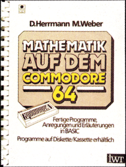
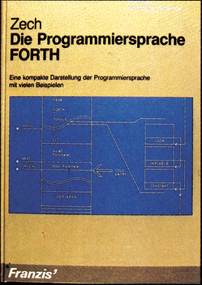

Bücher
Mathematik auf dem Commodore 64
Das Buch »Mathematik auf dem Commodore 64« liefert fertige Programme, Anregungen und Erläuterungen für mathematische Probleme.
Die Hauptschwerpunkte dieses Buches liegen auf der Mehr-Register-Arithmetik, der Zahlentheorie, der Kombinatorik, der Algebra, der Geometrie und der numerischen Mathematik. Diese Kapitel sind dann in einzelne Berechnungsprogramme unterteilt. So wird das Kapitel Zahlentheorie in die folgenden vier Berechnungen unterteilt: der Berechnung von 𝛑 auf 1000 Stellen genau, der Berechnung der Euler’schen Konstanten auf 1000 Stellen genau, die Lineare Diophantische Gleichung und der Kettenbruch/Bruchapproximation. Diese komplizierten Berechnungen sollten Sie allerdings nicht abschrecken, denn auch wesentlich einfachere Berechnungen sind vertreten.
Das Buch »Mathematik auf dem Commodore 64« lohnt sich sicherlich für alle, die sich in der Schule, im Beruf oder im Hobbybereich mit mehr oder weniger schweren Berechnungen abmühen. Zum Ende sei noch bemerkt, daß man alle im Buch behandelten Programme auf einer Diskette erhalten kann.
(rg)Herrmann — M. Weber, Mathematik auf dem Commodore 64, 252 Seiten, IWT-Verlag GmbH, Vaterstetten bei München, ISBN 3-88 322-048-5, Preis 42,- Mark.
Die Programmiersprache FORTH
Ursprünglich für Steuerungsaufgaben bei Radioteleskopen entwickelt und vor fünf Jahren noch so gut wie unbekannt, hat Forth in letzter Zeit eine relativ große Verbreitung auf allen gängigen Mikrocomputern gefunden. Das vorliegende Buch von Ronald Zech gibt, ausgehend vom F.I.G.-Forth Standard (FIG. steht für Forth Interest Group), eine umfassende Darstellung von Sprachstruktur und Programmiermöglichkeiten.
Die ersten Kapitel beschäftigen sich neben dem allgemeinen Aufbau von Forth auch mit grundlegenden Programmiertechniken. Ausführlich behandelt werden die in Forth zur Verfügung stehenden Kontrollstrukturen und die vielfältigen Möglichkeiten zur strukturierten Programmentwicklung. Ein ganzes Kapitel ist für die Kurzbeschreibung aller Worte des F.I.G.-Forth-Vokabulars reserviert, wobei allerdings auch auf andere Forth-Versionen und insbesondere auf den Forth-79-Standard eingegangen wird.
Die beiden letzten Abschnitte des Buches wenden sich ausschließlich an den fortgeschrittenen Programmierer. Behandelt werden hier unter anderem Zahlenformatierung, Rekursive Programmierung, Compiler-Anweisungen und die Erzeugung spezieller Strukturen mittels (BUILDS … DOES). Schließlich erfährt man noch einiges über die I/O-Konzeption von Forth, speziell über die virtuelle Speicherverwaltung und über die Installation von Forth auf verschiedenen Systemen.
Ganz sicher ist dieses Buch nicht für den Anfänger geschrieben. Wer jedoch schon über gewisse Grundkenntnisse verfügt und sich tiefer in diese eigenwillige Sprache einarbeiten will, der findet hier neben einer recht systematischen Darstellung auch eine Vielzahl nützlicher Hinweise für spezielle Problemlösungen. Zahlreiche, nicht immer ganz einfache Aufgaben mit Lösungsvorschlägen sind zur Selbskontrolle beim systematischen Erlernen der »höheren» Forth-Programmierung sehr hilfreich.
Der Anhang enthält unter anderem auch vollständige Listings eines Vokabulars zur Stringverarbeitung und je eines 6502- und 8080-Assemblers in Forth.
Zahlreiche Übersichtstafeln und Tabellen sowie ein übersichtliches Literatur- und Sachverzeichnis machen das Buch auch zu einem unentbehrlichen Nachschlagewerk für jeden F.I.G.-Forth-Anwender.
(ev)Ronald Zech: Die Programmiersprache FORTH, 312 Seiten, Franzis-Verlag GmbH München 1984, ISBN 3-7723-7261-9, Preis 49,80 Mark.